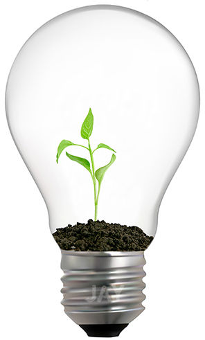

Вашим растениям может у вас не нравиться! То, что для вас уютное и комфортное жилище, растению может представляться тёмной пещерой. За годы эволюции растения привыкли к значительно более яркому освещению, чем могут дать им наши окна.

Даже если растение стоит на солнечном подоконнике, оно всё равно не чувствует себя так, как те его собратья, что растут в открытом грунте в естественной для них климатической зоне. Освещение на подоконнике растение чувствует, как если бы оно росло в тени высокого дерева, куда свет пробивается утром или вечером, и то сквозь листву. Хуже себя чувствуют прихотливые тропические растения, которым часто нужно больше света, чем северным собратьям.
Некоторые горожане могут похвастаться удачным расположением дома, выгодным для цветовода. Ваши растения чувствуют себя лучше среднего, например, если вы живёте на верхнем этаже высотного дома, где окна во всю стену и ни другими домами, ни деревьями не загораживаются. В таких условиях растения цветут по несколько раз в год и чувствуют себя замечательно. Но даже в самом солнечном доме, если он находится в наших широтах, растению будет темно зимой, во время нашей долгой «полярной ночи». В более «тусклых» условиях растение будет страдать от недостатка света и зимой, и летом. А значит, затруднён рост новых листьев и побегов, цветение становится реже и прекращается совсем.
Если вам кажется, что у ваших растений не очень светлое будущее и настоящее, время «осветить пещеру». То есть задуматься об искусственной досветке растений. Благодаря качественному свету для растений достаточной яркости и нужного спектра растения могут обходиться полностью без солнечного света, например, в помещении без окон.
Как именно нужно подсвечивать растения?
Стандартные рекомендации на этот счёт диктуют установку светильников в 20 см или более над растением. Эти рекомендации разрабатывались, когда для досветки и полноценного освещения растений использовались лампы накаливания или другие лампы, выделяющие много тепла при работе. Можно размещать светильник и ближе к растению, если это современный свет для растений, не нагревающийся до высоких температур и не сушащий листья. Интенсивность света уменьшается пропорционально квадрату расстояния от источника света. Чем ближе источник света к растению, тем лучше оно освещено.
Сколько времени следует освещать растения? Например, тропическим растениям, естественно, нужно много света. Для полноценной жизни, роста и цветения им требуется не меньше 12-14 часов светового дня ежесуточно. Удобное дополнение для освещения растений — розетка с таймером. Она автоматически включит светильник и выключит после того, как растение получило свою дозу «солнца».
Попробуйте дополнительное освещение растений и уже через пару недель вы заметите, что листья приобрели более насыщенную окраску и стали здоровее. При регулярном дополнительном освещении растение будет чаще радовать вас и замечательными цветами.